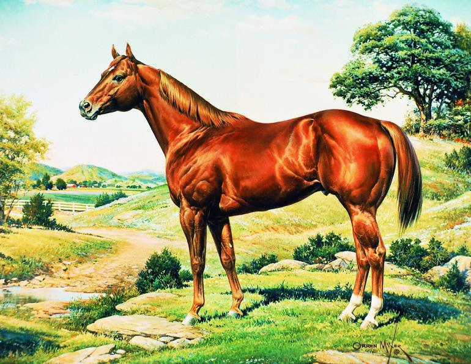
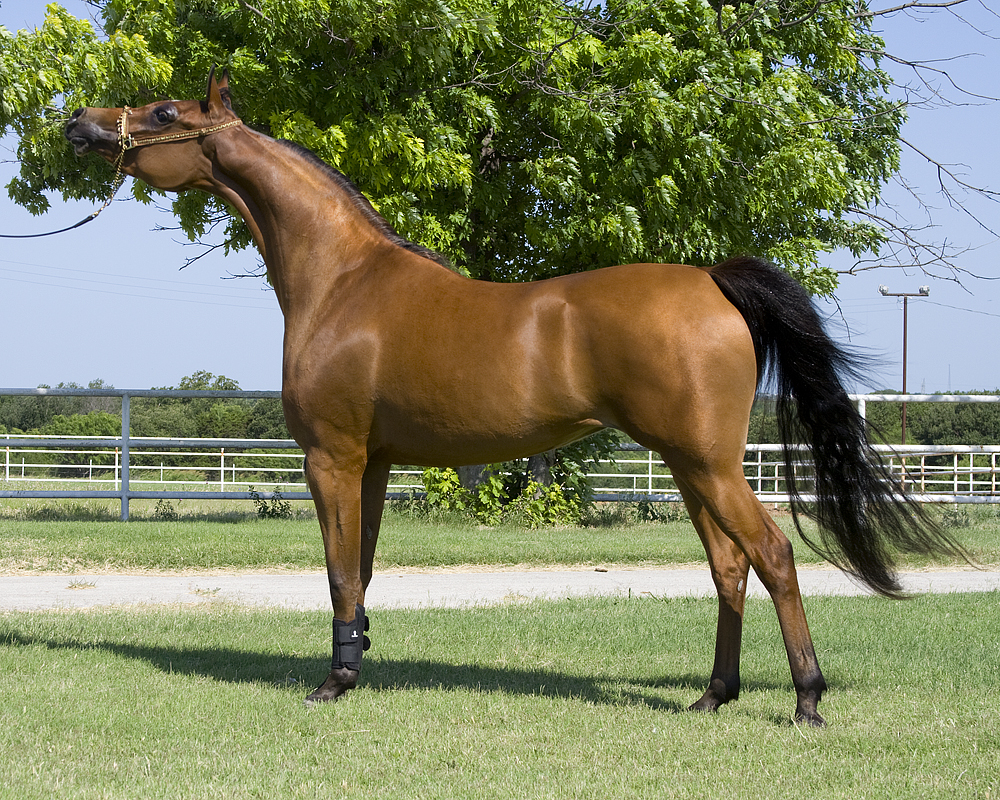
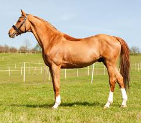
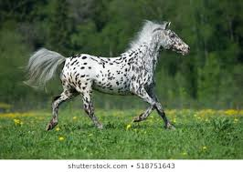
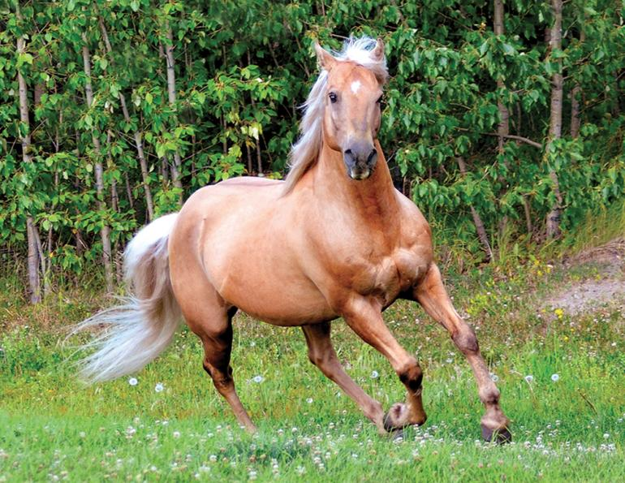

Embraced by beginners and professional equestrians all around the world, the American quarter horse is famous for its agility, docility, and athleticism. Originally bred from English thoroughbreds and Native American Chickasaw horses during the 1600s, it has the largest breed registry in the world. These horses are shining stars on the trail and in the show ring. 
The Arabian has the oldest horse breed registry in the world. Its lineage goes as far back as 3000 B.C. In fact, every light horse breed, including Appaloosas, Morgans, and Andalusians, can trace their ancestry back to the Arabian. It can be a rather spirited horse breed, but it's also loving and loyal. 
Thoroughbreds are the most popular racing horse in North America. This breed is considered a "hot-blooded" horse, which means it's known for its agility, speed, and spirit. It's a fine multipurpose horse that often has a career in other equestrian competitions besides racing, such as dressage and jumping, or it lives its life as a companion animal. 
The colorful, spotted Appaloosa was originally developed for hunting and battle by the Nez Perce Native Americans. It's believed to be a descendant of wild horses mixed with the thoroughbred, American quarter horse, and Arabian. This hardy, versatile horse is great for herding, pleasure riding, long-distance trail riding, and more. 
The strength and elegance of the Morgan have made it a popular horse breed. As the official horse breed of Vermont, the muscle of the Morgan was used for clearing and tilling New England farms during colonial times. Today, it's a popular driving and riding horse. It's surefooted over rough trail and dignified in the show ring. 